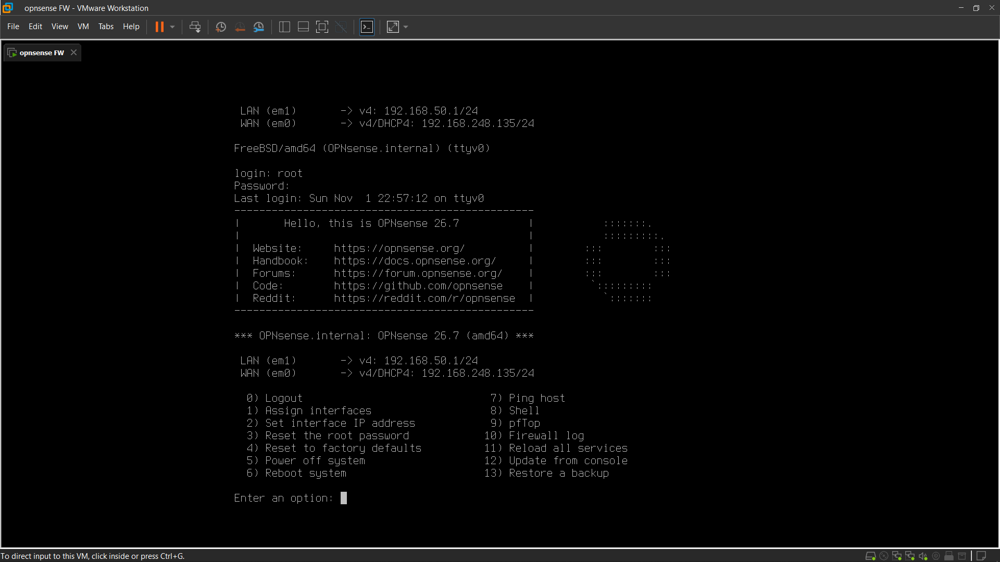
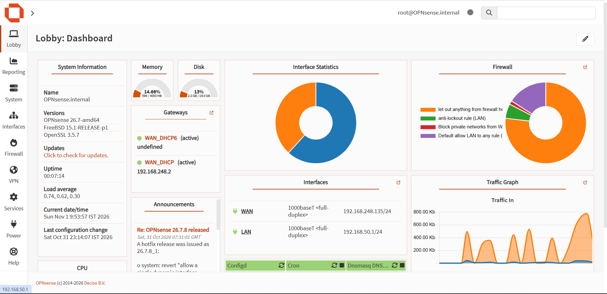
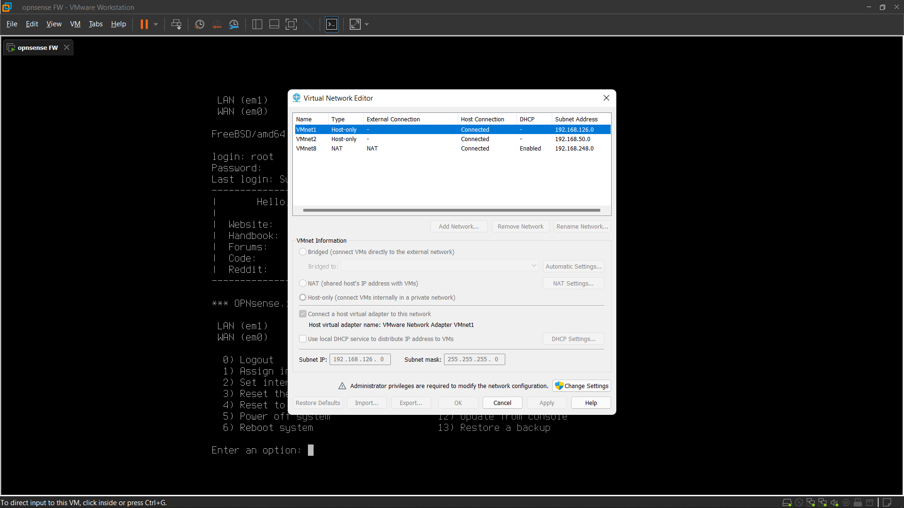
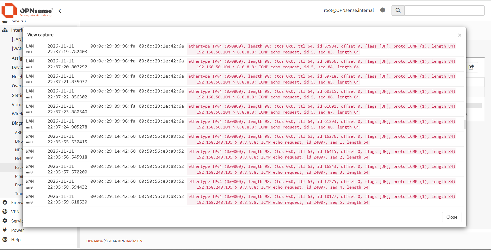
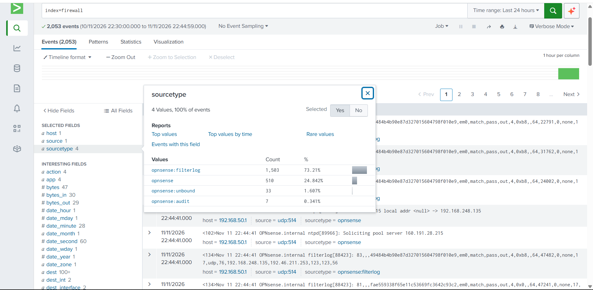
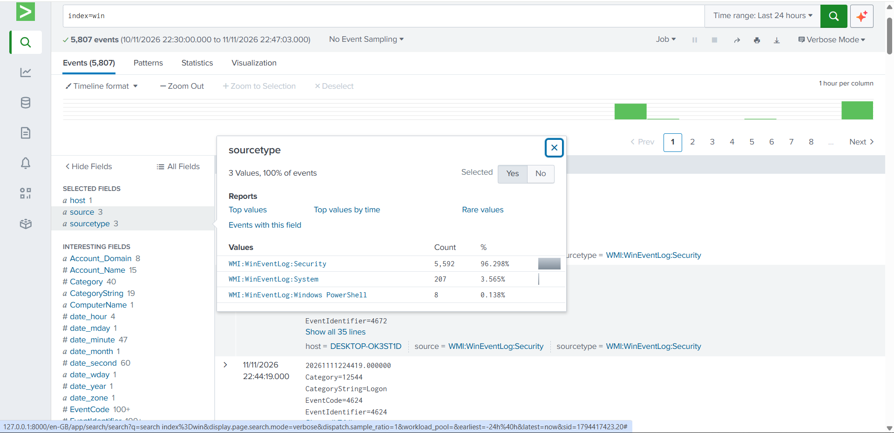
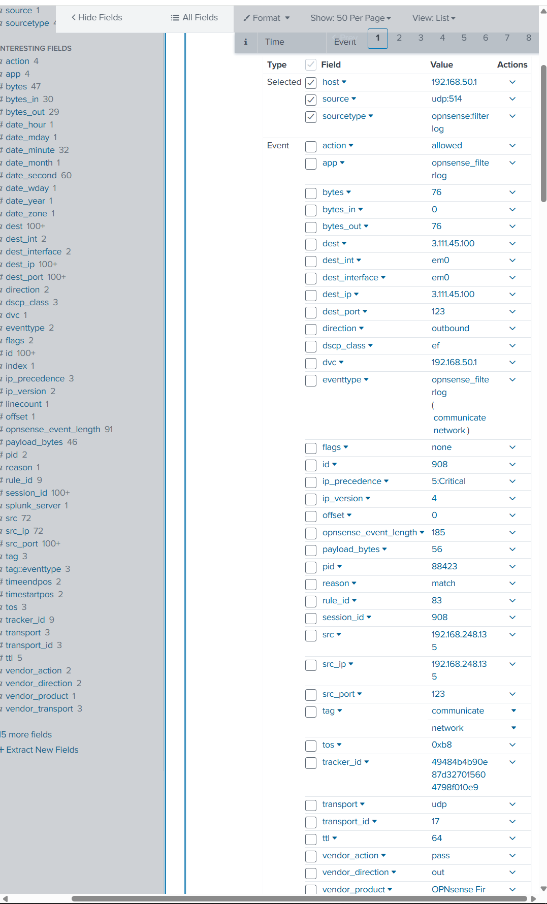
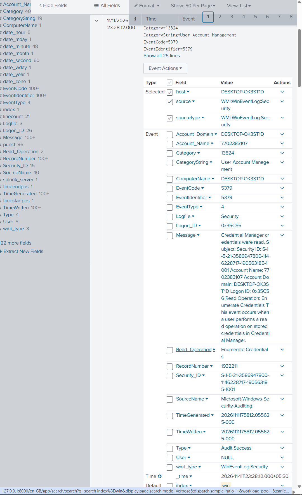

SIEM & Monitoring
Splunk Enterprise, SPL searches, event review, syslog ingestion, WMI, log analysis
CYBERSECURITY PORTFOLIO
Computer Science graduate building practical skills in security monitoring, SIEM, network defense, and incident investigation through hands-on labs and projects.
ammar@portfolio:~
user@security-lab:~$ whoami
Syed Ammar Ali
user@security-lab:~$ focus --current
SIEM
EDR
Firewall
Linux
Virtual Machines (VM-ware)
/ ABOUT
I’m a Computer Science Engineering graduate interested in cybersecurity operations, network security and defensive security. I’m developing hands-on experience by building a home lab, collecting and analyzing logs.
/ TECHNICAL TOOLKIT
Splunk Enterprise, SPL searches, event review, syslog ingestion, WMI, log analysis
OPNsense, firewall rules, TCP/IP, DNS, DHCP, VLAN concepts, ports and protocols
Windows, Linux, virtual machines, lab troubleshooting, basic command-line tools
Security monitoring, alert triage concepts, phishing awareness, incident-response fundamentals
/ PROJECTS
Built a lab (from scratch) to send OPNsense firewall syslog events and Windows event logs using WMI to Splunk, inspect firewall activity.
/ HOME LAB NOTES








05 / CONTACT